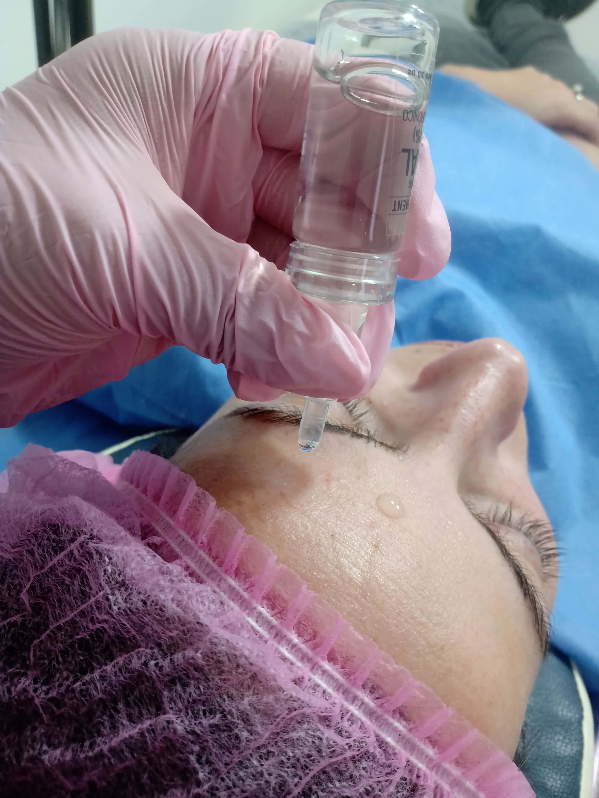
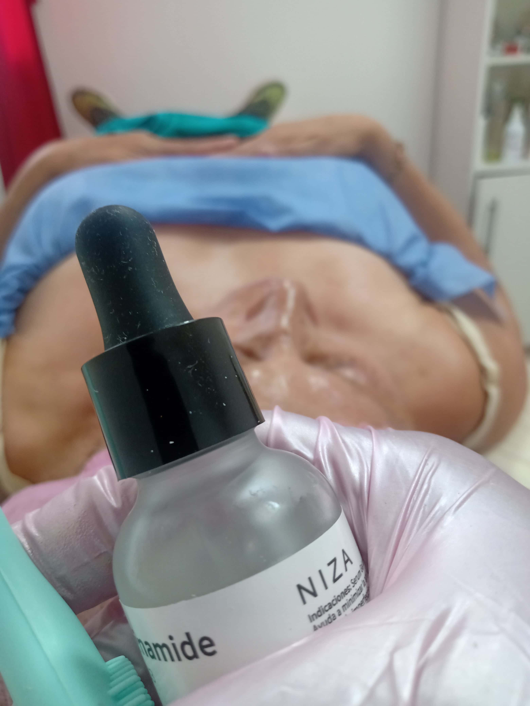
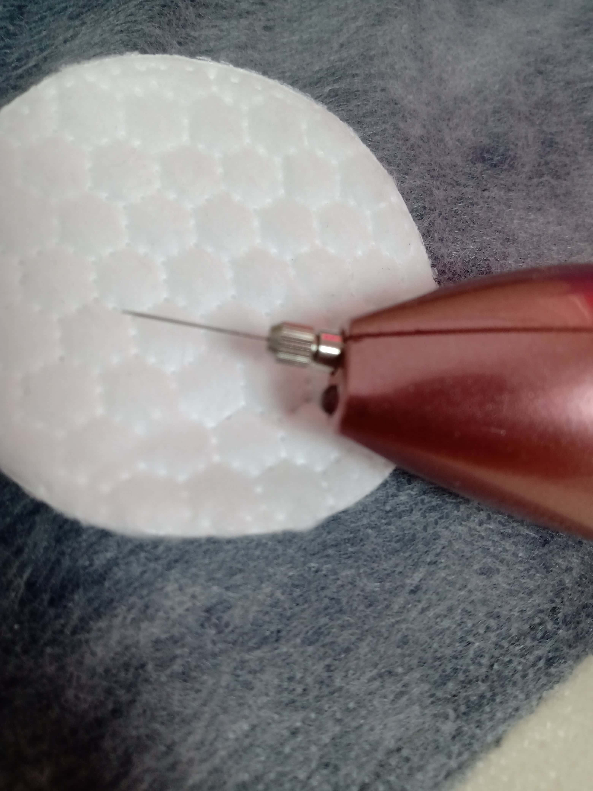
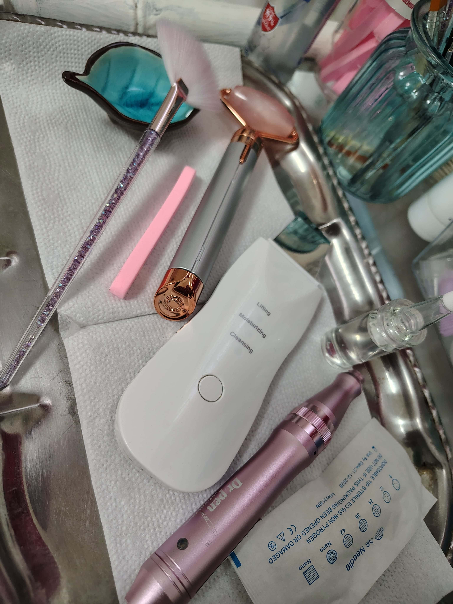

LOS PRODUCTOS QUE SE UTILIZAN
Un producto cerúm (también conocido como suero cerúm) es un tratamiento facial altamente concentrado, formulado con ingredientes activos encapsulados en vesículas cerámicas (cerosomes) para una penetración profunda en la piel.Es ideal para usar con DermaPen (microneedling), ya que este dispositivo crea microcanales que facilitan la absorción de los ingredientes activos.
La Niacinamida (o nicotinamida) es una forma de vitamina B3 y uno de los ingredientes más efectivos y versátiles en el cuidado de la piel, especialmente para tratar manchas, hiperpigmentación, arrugas y líneas de expresión.Reduce la hiperpigmentación,inhibiendo la transferencia de melanina a las células de la epidermis, lo que ayuda a igualar el tono de la piel. También mejora la textura de la piel, aumentando la producción de colágeno y elastina, lo que reduce la apariencia de arrugas y líneas finas.Fortalece la piel, mejorando su barrera cutánea y aumentando su resistencia a factores externos como la contaminación y los rayos UV. Controla es exceso de grasa en la piel, lo que lo convierte en un ingrediente ideal para pieles grasas y propensas al acné. Además, tiene propiedades antiinflamatorias que ayudan a calmar la piel irritada y roja. También es un potente antioxidante, protegiendo la piel de los daños causados por los radicales libres y el estrés ambiental. La Niacinamida es adecuada para todo tipo de piel, incluyendo pieles sensibles, grasas, secas y mixtas. Se puede utilizar en combinación con otros ingredientes activos, como el ácido hialurónico.
El PlasmaPen es un dispositivo de electrocirugía estética que utiliza tecnología de plasma para realizar tratamientos de rejuvenecimiento facial y corporal. Este dispositivo genera un arco eléctrico que ioniza el gas en el aire, creando un pequeño punto de plasma que se aplica sobre la piel. El PlasmaPen es utilizado para tratar arrugas, flacidez, cicatrices, manchas y otros signos de envejecimiento. El tratamiento con PlasmaPen es mínimamente invasivo y no requiere cirugía. Durante el procedimiento, se aplica una crema anestésica para minimizar cualquier molestia. El dispositivo se mueve sobre la piel, creando pequeños puntos de plasma que estimulan la producción de colágeno y elastina, mejorando la textura y firmeza de la piel.
Estas herramientas son populares para el cuidado de la piel, entre ellas las que podemos visualizar en la imagen, son el Rodillo de Jade, el Ultrasound Spatula y el Bolígrafo DermaPen. El Rodillo de Jade es un rodillo facial hecho de jade, utilizado para masajear la piel y mejorar la circulación sanguínea. El Ultrasound Spatula es un dispositivo que utiliza ultrasonido para limpiar y exfoliar la piel, eliminando impurezas y células muertas. El Bolígrafo DermaPen es un dispositivo de microneedling que utiliza agujas finas para crear microcanales en la piel, lo que estimula la producción de colágeno y mejora la textura de la piel.